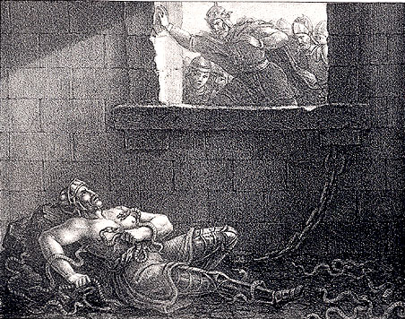

Ragnar Lothbrok: The Viking Legend
Ragnar Lothbrok is a legendary Viking hero who lived a long time ago. He is often portrayed as a brave and adventurous warrior in Norse mythology and historical stories. According to the tales, Ragnar was a skilled and fearless warrior who became famous for his daring exploits and incredible feats.
One of the most well-known stories about Ragnar is his journey to distant lands to raid and explore. He sailed across the seas with his Viking longships, facing challenges and battles along the way. Ragnar was known for his clever strategies and fearlessness in the face of danger.
Ragnar is often associated with the idea of strength, courage, and leadership. His legendary exploits have inspired many stories, books, and even a popular TV show called "Vikings."
While it's important to remember that the stories about Ragnar Lothbrok may have some elements of myth and legend, they continue to captivate the imaginations of people, young and old, who are fascinated by the adventures of this legendary Viking hero..

Short Biography: Ragnar Lothbrok
Ragnar was born into a humble family, but he had big dreams. As a young boy, he showed extraordinary skills in fighting and sailing. He loved exploring the seas and discovering new lands with his trusty Viking longship and a fearless crew.
One of Ragnar's most famous stories is about his battle with a fierce dragon. Legend has it that he used his cunning mind and bravery to defeat the dragon and save his people. This made him a hero in the eyes of many.
Ragnar was also a wise leader who cared deeply for his friends and family. He believed in the importance of working together and treating everyone with respect. His leadership qualities made him loved and admired by those who sailed with him.
Despite facing many challenges, Ragnar's spirit of adventure never wavered. He continued to explore new lands and face exciting challenges with his Viking companions. His legacy lives on in the tales of courage and friendship that are told to this day.
Ragnar Lothbrok's adventures have inspired people to be brave, kind, and adventurous, just like him. Even though he lived a long time ago, his stories continue to capture the imaginations of people all around the world, including elementary students like you!
Fun Facts
Ragnar Lothbrok's name is surrounded by mystery, and some believe he might have been a combination of different Viking heroes.
He is often depicted wearing a horned helmet, but real Vikings didn't actually wear helmets like that!
Ragnar was known for his amazing skills in battle, sailing, and leading his fellow Vikings into epic quests.
Timeline
8th Century Ragnar Lothbrok is believed to have lived during this time, but exact dates are uncertain because it was so long ago.
793 AD Ragnar is said to have raided the Lindisfarne monastery in England, marking the beginning of the Viking Age in history.
9th Century Ragnar's adventures continued, including his legendary voyage to Paris where he faced many challenges.
865 AD According to legends, Ragnar faced a tragic end when he was captured by a king and thrown into a pit of snakes.
Impact on the World
In the exciting world of Vikings, Ragnar Lothbrok stands out as a hero who sailed uncharted waters, fought fierce battles, and left a legacy that continues to inspire people to this day. His tales remind us of the courage and spirit of adventure that defined the Viking Age.
Reference Books for Elementary Students
While there may not be specific books tailored for elementary students exclusively about Ragnar Lothbrok, you can introduce them to Norse mythology and Viking history through age-appropriate resources. Here are some general recommendations:
"D'Aulaires' Book of Norse Myths" by Ingri d'Aulaire and Edgar Parin d'Aulaire
This beautifully illustrated book introduces Norse mythology, including stories about Odin, Thor, Loki, and other figures from Viking legends.
"Viking Ships at Sunrise" (Magic Tree House #15) by Mary Pope Osborne
Part of the Magic Tree House series, this book takes young readers on an adventure to Viking times, providing a glimpse into Viking life and culture.
"You Wouldn't Want to Be a Viking Explorer!" by Andrew Langley
This interactive book offers a humorous take on the life of a Viking explorer, providing insights into their daily lives, adventures, and challenges.
"The Vikings: Foe or Friend?" by Mick Manning and Brita Granström
This non-fiction book provides an overview of Viking history, including their exploration, trading, and daily life. It presents the Vikings in a balanced way, discussing both their positive and negative aspects.
"The Great Adventures of Sherlock Holmes" by Arthur Conan Doyle (adapted for children)
While not directly related to Ragnar Lothbrok, this book features a classic tale called "The Adventure of the Viking Voyager," where Sherlock Holmes investigates a case involving a Viking ship. It offers a fun and engaging story for young readers.
For more advanced readers or for read-aloud sessions with guidance, you may also consider exploring Norse mythology in-depth through adaptations or retellings. Always check the reading level and content to ensure they are appropriate for elementary students. Additionally, encourage discussions and exploration of related topics to enhance their understanding of Viking history and mythology.